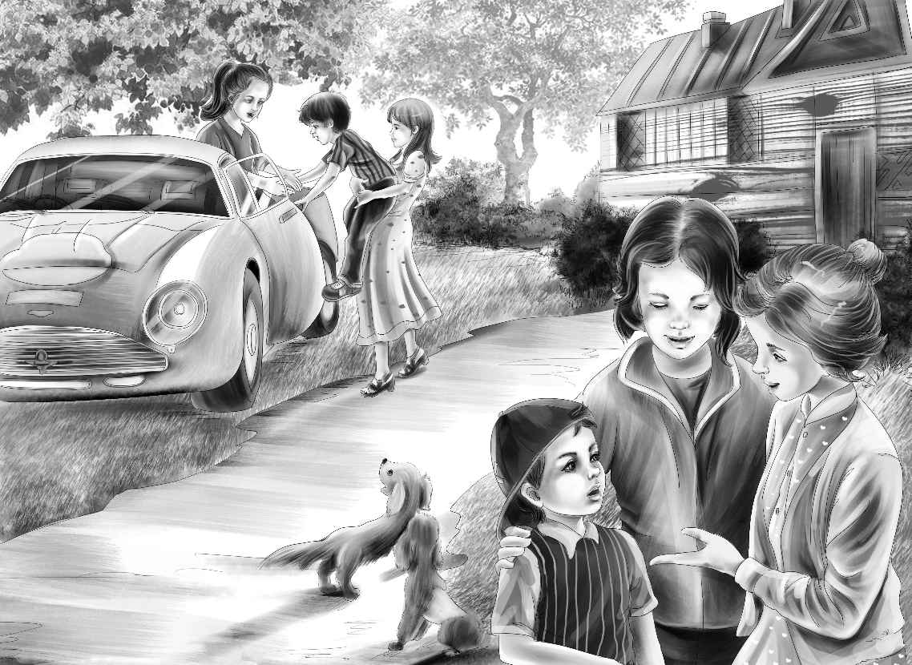

Secrets
大家翻了个底朝天，可就是没找到那份报纸。
“所有的报纸都放在那个箱子里，”麦琪说，“我保管得好好的。”
“其他的都在，只有那一张没找到。”班尼说。
“我倒是有一份，可是和房子一起烧掉了。”迈克说。
“好了，别担心，”简姑婆说，“你们到报社总能再买到一份的。”
亨利说：“迈克，我们要去买烤炉了，报纸随时都可以找啊！”
“这份报纸非常重要，”班尼说，“不过我想现在也不用急着找。”
“好了，快走吧，”杰西催促道，“买齐所有的东西该多有意思啊！我从来没买过烤炉呢！”
“你们不觉得应该叫上伍德太太跟我们一起去吗？”维莉建议道，“她肯定想挑一个自己喜欢的烤炉。”
“对，一定得带上她！”亨利说，“我们快走吧！望望，这次你能跟我们一块儿去了。”公主则依旧留在家里陪着简姑婆。
孩子们一起来到蓝房子邀请伍德太太同去，伍德太太欣然同意了。
“咱们带上花花吧！”迈克提议道，“它才不喜欢被拴着呢，它一定想跟我们一起去。”
“它跟望望能合得来吗？”杰西问。
“试试吧！”迈克说。之后，大家欣喜地看到，两只小狗并肩前行，相安无事。
这是一家很大的商店，里面的货品一应俱全，有桌子、椅子、烤炉和各式餐具。伍德太太逛了一圈，很开心地挑选了一个有着大大烤箱的巨型烤炉，还选中了一台超大的冰箱。
“冰箱是得买大点的，好把馅饼全放进去。”班尼说，“伍德太太，您想要什么颜色的冰箱？”
“什么颜色都行。”伍德太太说。
“姐姐们喜欢蓝色。”班尼说。
“那就买蓝色系列的厨具吧，”伍德太太说，“看，那个蓝色水槽多漂亮！”
店员殷勤地说：“选好以后，我们会给您打包好送过去，请问送货地址是哪里？”
“就是铀矿大楼里的那间大空房子。”亨利说，“我爷爷说，等货送到了马上给你们付款。”
“没问题。”店员笑着答道。
“卡特先生说保险公司会赔偿我们火灾的损失，”伍德太太说，“要真能如此，就太好了，这场大火几乎让我们一无所有。”
“伍德太太，让我们陪你去买碗和碟子吧！”维莉突然欢叫道。
大家都惊讶地看着维莉——她很少这么兴奋。
杰西一把揽住维莉，“亲爱的，我们当然要买碗和碟子。伍德太太，我们一起去方便吗？”
“当然方便，我正需要你们的帮助呐！”伍德太太说，“你们总有好点子！”
“可是你们准备把买好的餐具放在哪里呢？”商店的店主问道，“你们不会是想住到矿上去吧？”
“住矿上？天啊，当然不是。”伍德太太说，“我们只不过要把餐具暂时放在那里而已。”
“可是您为什么不能住在矿上呢？”班尼突然问道，“您总得有个地方住啊！”
“是啊，粉房子重建起来还需要好长时间呢！”亨利补充道。
“说得也是，我也不想在史密斯太太那儿打扰太久。”伍德太太说，“我的确得找个地方住……不知道矿上夜里有没有人？”
“我刚刚查过了，有四个夜班守卫。”亨利说，“还有卡特先生，他住的绿房子离你最近了。”
“那我可以去找卡特先生串门了！”伍德太太说，“不过，咱们现在先挑选碗和盘子吧。”
“这颜色好漂亮！”杰西惊叹道。
他们眼前是五颜六色的盘子和杯子，有粉色、蓝色、黄色、绿色、紫色，还有浅橙色的。
“咱们为什么不每种颜色买一个呢？”班尼建议道，“那样就有六个盘子了。”
“我想买七个！”伍德太太笑着说，“你们一定要经常过来吃饭才行！”
杰西用不容辩驳的口吻说：“伍德太太，干脆买一打吧，每种颜色两个。”
“对，”班尼说，“粉色杯子给我——我每次去您那儿吃饭的时候就用它来喝水。”
杰西笑了。“班尼在家用的杯子就是粉色的，”她告诉伍德太太，“他在棚车里住的时候也有个粉色杯子，我生怕给摔坏了！”
“我们还得买刀、叉、勺子和平底锅。”伍德太太说。
店主一副欲言又止的样子，最后还是忍不住开口道：“伍德太太，我不知道该不该说这话，但假如我是您的话，就不会买这么多东西。”
“为什么？”迈克叫道。
“哦，我不该多嘴的，”店主说，“但是据我所知，你的朋友们将会送很多东西给你。”
“啊，他们的心肠太好了！”伍德太太感动地轻呼，“我怎么没想到这一点。”
“千万别说是我告诉你的！”店主眨了眨眼睛。
“我们不会说的，谁都不会说出去的。”班尼保证道，“没错，如果别人送你的东西和你自己买的一模一样，那多没劲啊！”
“确实如此，你们买的已经够多了，”店主说，“下面的事情就交给我们处理好了！如果你们愿意的话，就坐我们的送货车回去吧，孩子们坐车厢，伍德太太坐在副驾驶的位置。”
“我也想和司机一起坐！”迈克央求道。
“没问题，”店主笑道，“快上车吧！”
两只小狗一直在门外候着。装好货品以后，孩子们和小狗也上了车。
一路上，每个行人都朝车里的孩子们微笑招手，孩子们也同样挥手致意。小狗们则兴奋地叫个不停。
迈克问司机：“这么重的烤炉，你待会儿怎么搬进矿上的小屋呢，先生？”
司机大笑起来：“我的帮手多着呢，你就等着瞧吧！”
“你打电话求助了吗？”迈克说。
“没有，不过店主打过。”司机说，“每个人都有秘密武器，不是吗？快看那边，铀矿办公室旁边！”
车慢慢停了下来。孩子们果然看到有一群人守候在那里，不禁开心地笑了。
